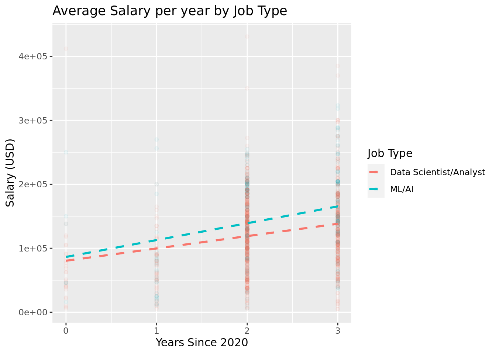
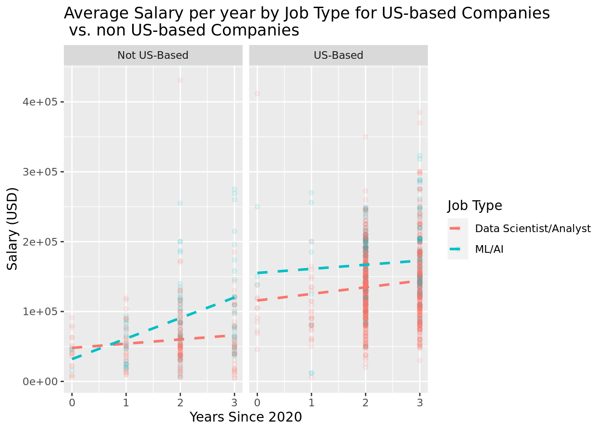

Stat Wizards Project
Report on jobs in Data/AI
Introduction and Data
Over the years, technology has continued to advance and become more present in one’s daily life. Specifically, the presence of artificial intelligence and machine learning has drastically grown. As we have seen applications such as ChatGPT, algorithms automatically detecting objects, or live captions on videos, our group was intrigued by this technology’s growing influence on society. It would thus be likely that employees in this sector of technology roles would be benefitting salary wise as they are in high demand. We thus wanted to investigate how these jobs’ salaries are changing in comparison to other well known tech jobs, like data analysts/scientists. As an added bonus, this allows us to explore what this class has been teaching us about all semester - data scientists!
Our research topic aims to understand various tech jobs and how they pay on average in the U.S. and globally. Our research question is: How do the salaries of machine learning/AI jobs and that of data scientists/analyst jobs compare to one another, and how are they changing with time? Also, are these results different for companies in the US vs. outside the US?
Our hypothesis is that machine learning/AI salaries not only will be higher overall, but will have increased more rapidly in recent years in comparison to data scientist/analyst jobs. We also predict that US-based workers will have higher mean salaries. We are making this educated guess due to the rising popularity of artificial intelligence/machine learning in our everyday lives, which generates higher demand leading to higher wages. We also believe that the United States has very well established tech companies that generate overall higher salaries.
The source of the data is ai-jobs.net. It is a website for posting tech jobs and analyzing trends in job data. The site collects salary information anonymously from professionals all over the world in the AI/ML/Data Science space and makes it publicly available. This particular data set is a collection of global AI, ML, and Data salaries. The vast majority of the data was collected in the years of 2021-2023, inclusive. Each observation records the person’s job information. This includes work year, employment type, job title, salary, employee residence, company location, etc.. Overall, there are 3046 observations and 11 variables. The variables all correspond to a worker’s characteristics, including their salary, company location, experience level, etc.
We are most interested in the salary_in_usd variable as our response variable, which is quantitative, along with categorical explanatory variables including job_title, company_location, and work_year. We used the job_title variable to filter out all the alternate tech jobs outside of our focus. Subsequently, we needed to pair together the data for employees with machine learning and artificial intelligence jobs into one variable, and the same for those with data scientist and analyst jobs. We used the job_title variable to filter the data into the categories and stored them in two new variables: ML/AI and datascientist/analyst.
One possible ethical issue regarding how our data was collected is that people anonymously submit their own salary information to this dataset. Without being overlooked it is highly possible that people accidentally, or purposefully, submit wrong numbers. This dataset is open to anyone’s edits which poses another issue. Even if there were correct submissions initially, if someone is interested in the data and wants to play around with possible outcomes, they may change the numbers themselves.
Literature
The article, “Machine Learning Engineer vs. Data Scientist - The Differences,” last updated April 24, 2023, aims to provide an overview comparison between two popular data scientist positions: Machine Learning Engineers vs. Data Scientists. First, it defines a Machine Learning Engineer as someone who makes a system for customers or organizations to make predictions.1 In contrast, this article illustrates the role of a Data Scientist as someone who decides what data to feed these systems or machine learning models.2
Using data collected by Indeed Jobs, this article analyzes the popularity trends of these two positions worldwide and finds that while more people around the world hold the position of a Data Scientist, the need for Machine Learning Engineers is growing faster. This article not only compares the demand for these positions but their salaries as well.3 According to payscale, the current salary of a Data Scientist is between $85K and $134K compared to a Machine Learning Engineer who earns between $93K and $149K.4 These are large ranges that often vary from place to place. Therefore, our study will add to this research by looking at the mean salaries for these roles over time to help contextualize and view the trends behind these numbers.
In addition, our study aims to push this comparison by looking at mean salaries over time and how the value of these roles (measured in mean salary) has changed over time. In addition, we will also push the comparison by breaking down the roles by those in and outside the U.S., not just examining all the jobs worldwide. We believe this is useful since it will show how one’s salary might be different depending if they work in the U.S. or abroad. This article examines the popularity of the two positions worldwide by looking at the % of matching job postings.5 Still, our study will examine how this increase in demand or need for these positions has impacted the salaries domestically and abroad.
This research is important for anyone interested, like we are, in the ever-growing field of data science and the possible future roles we might hold. Therefore we aim to contextualize the salaries of these different positions within the data scientist field and how that might differ depending on where you work. After all, the demand and usage for Data Science are different in different places; therefore, it is useful that we examine these salaries in two ways: over time, and not just in a domestic vacuum, but internationally as well.
Rows: 3,046
Columns: 11
$ work_year <dbl> 2023, 2023, 2023, 2023, 2023, 2023, 2023, 2023, 202…
$ experience_level <chr> "MI", "SE", "SE", "SE", "SE", "SE", "SE", "SE", "SE…
$ employment_type <chr> "FT", "FT", "FT", "FT", "FT", "FT", "FT", "FT", "FT…
$ job_title <chr> "Financial Data Analyst", "Data Scientist", "Data S…
$ salary <dbl> 130000, 205000, 140000, 297300, 198200, 141288, 941…
$ salary_currency <chr> "USD", "USD", "USD", "USD", "USD", "USD", "USD", "U…
$ salary_in_usd <dbl> 130000, 205000, 140000, 297300, 198200, 141288, 941…
$ employee_residence <chr> "US", "US", "US", "US", "US", "US", "US", "US", "US…
$ remote_ratio <dbl> 100, 0, 0, 100, 100, 0, 0, 100, 100, 0, 0, 100, 100…
$ company_location <chr> "US", "US", "US", "US", "US", "US", "US", "US", "US…
$ company_size <chr> "L", "M", "M", "M", "M", "M", "M", "M", "M", "M", "…Methodology:
The first step in assessing our research question is determining the difference in salaries between our two groups of jobs. Accomplishing this requires a hypothesis test, as we want to test for independence between the true mean salaries of our groups. A confidence interval would only be helpful in determining a range of sample mean differences, while a hypothesis test can confirm our hypothesis that the true mean salaries for Machine Learning/AI jobs are higher than the true mean salaries for Data Scientist/Data Analyst jobs.
\(H_o: \mu_{ai} - \mu_{data} = 0\)
Our null hypothesis is that the true mean salary of machine learning/AI jobs (\(\mu_{ai}\)) is equal to the true mean salary of data scientist/data analyst jobs (\(\mu_{data}\)).
\(H_a: \mu_{ai} - \mu_{data} > 0\)
Our alternative hypothesis is that the true mean salary of machine learning/AI jobs (\(\mu_{ai}\)) is greater than the true mean salary of data scientist/data analyst jobs (\(\mu_{data}\)).
Our next step is creating our two categories of jobs from our data set, so we can start generating statistics. The job categories will be data scientist/analysts, while the other is machine learning and artificial intelligence roles.
Now, we want to compute our observed statistic for mean salaries in these job categories:
# A tibble: 2 × 2
job_type mean_salary
<chr> <dbl>
1 Data Scientist/Analyst 123528.
2 ML/AI 147410.\(\bar{x}_{ai} - \bar{x}_{data} = 23882\)
The sample mean salary difference between AI jobs and data science jobs is 23,882$.
We can now use the central limit theorem to carry out our hypothesis test, as the observations are independent from one another, and there are at least 30 observations in each group. This can be seen below:
# A tibble: 2 × 2
job_type n
<chr> <int>
1 Data Scientist/Analyst 1173
2 ML/AI 296Now we calculate our standard deviations:
# A tibble: 2 × 2
job_type sd_salary
<chr> <dbl>
1 Data Scientist/Analyst 57390.
2 ML/AI 64176.Now we can use our standard deviations and observation counts for each group to calculate our standard error:
[1] 4089.263Now, we can use the standard error calculated above to generate our p-value. We will use a t-distribution because we do not know the population standard deviation and our response variable isn’t categorical (salary is quantitative). Also, the n values aren’t large enough for each group (the smaller group has 296 samples). Below we calculate our t-score and then use that in combination with our standard error to find the p-value.
[1] 6.877573e-09Our p-value is approximately 0 (6.877573e-09; < 0.001). This means that is is extremely unlikely (nearly a probability of 0) of observing our sample mean salary difference of $23882 (or a larger age difference), if our null hypothesis that the true mean salary of the two job types are equal is true. This is statistically significant, as we are able to reject our null hypthesis using a significance level of 0.05 (or 0.01). There is strong evidence to conclude the alternative hypothesis that the true mean salary of ML/AI jobs (\(\mu_{ai}\)) is greater than the true mean salary of Data Science/Analyst jobs (\(\mu_{data}\)).
This conclusion aligns with our hypothesis ** - expand on this in results
We can also use logistic regression to show the probability that a job is one of the two categories (AI/ML vs. Data Scientist/Analyst) based on salary. We do this by fitting a model to predict job type (categorical) based on salary (quantitative). We are using logistic regression for this reason, as it is better at working with categorical response variables and quantitative explanatory variables. Then, we add in our predicted probability values to our data set, and finally plot it.

# A tibble: 2 × 5
term estimate std.error statistic p.value
<chr> <dbl> <dbl> <dbl> <dbl>
1 (Intercept) -2.27 0.168 -13.5 1.76e-41
2 salary_in_usd 0.00000661 0.00000109 6.03 1.59e- 9We can see from the plot that as salary increases, there is a higher probability that you have a ML/AI, rather than a Data Scientist/Analyst. This further shows that AI/ML jobs tend to have higher mean salaries than data jobs, which aligns with our hypothesis.
**expand on this in results section
We also want to look at how the salaries of these two job types have changed in recent years. We can do this by fitting a linear regression model with salary as our response variable and year and job type interacting as our explanatory variables. To do this we need to adjust our work_year variable. In the original data set the year is stated as the actual year (2020, 2021, 2022, etc…), however we need the year to be lower values (0, 1, 2) so that it works visually in a linear regression model. So, we will subtract 2020 from each of the work_year observations, such that work_year is effectively years since 2020.
# A tibble: 4 × 5
term estimate std.error statistic p.value
<chr> <dbl> <dbl> <dbl> <dbl>
1 (Intercept) 80463. 5866. 13.7 2.21e-40
2 work_year 19259. 2515. 7.66 3.41e-14
3 job_typeML/AI 5986. 12609. 0.475 6.35e- 1
4 work_year:job_typeML/AI 7084. 5247. 1.35 1.77e- 1From this tidy table we can come up with this equation for salary:
\(\widehat{salary\_in\_usd} = 80463.128 + 19258.594*year + 5986.455*ML/AI + 7083.503*year*ML/AI\)
{1 if ML/AI; 0 else}
From this, the individual salary equations are as followed:
Data Scientist/Analyst: \(\widehat{salary\_in\_usd} = 80463.128 + 19258.594*year\) ML/AI: \(\widehat{salary\_in\_usd} = (80463.128 + 5986.455) + (19258.594 + 7083.503)*year\)
From this tidy, we can see that the mean salary of ML/AI jobs is $5986.455 higher than the mean salary for Data Scientist/Analyst jobs. Also, as each year goes by, the salary for Data Science jobs goes up by $19, 258.594, while the salary for ML/AI jobs goes up by $26,342.1. We can plot this fitted model below:
`geom_smooth()` using formula = 'y ~ x'
Although it’s a small difference, we can see that ML/AI job salaries have a steeper slope, meaning they are increasing at a faster rate in recent years. This aligns with our hypothesis. **expand on this in results section.
We also want to determine how this relationship differs between companies that are based in the US vs. companies that are based outside of the US. We can do this by creating the same linear regression plot, except this time specifying which observations are from US-based companies and which aren’t:
`geom_smooth()` using formula = 'y ~ x'`geom_smooth()` using formula = 'y ~ x'
We can see that for non-US based companies, ML/AI jobs are increasing at a much more rapid pace than Data Scientist/Analyst jobs, and they have taken over Data Scientist/Analyst jobs in salaries. Also, when we observe strictly US-based companies, ML/AI jobs have consistently had higher salaries since 2020, however they don’t seem to be growing at as rapid of a pace as non US-based AI/ML jobs. Surprisingly, they don’t even seem to be growing much faster than Data Science jobs in the US. **expand on this a lot in results section
summary statistics - **DO WE NEED THIS??
Result
ORIGINAL
In order to arrive at an accurate and appropriate conclusion for our hypothesis: that machine learning/AI salaries will be higher and have increased more rapidly than Data scientist/analyst jobs in recent years and that US-based workers will have higher mean salaries, we chose to visualize our data set using linear and logistic regression plots.Two clear observations were confirmed in our plots. First, the mean salaries in 2020 were ordered from lowest to highest: Data Analyst, Data Scientist, and Machine Learning Engineer. This can be seen from our tidy(), as our intercept value is 76466.8 (the mean Data Analyst salary in 2020), the Data Scientist intercept is (76466.8 + 148.9), and the Machine Learning intercept is (76466.8 + 21460.2). These intercept values represented the mean salaries in 2020. This also confirms our hypothesis that Machine learning salaries are higher than data scientist/analyst jobs. The second observation is that rates at which job salaries have increased since 2020 are ordered from lowest to highest such as Data Analyst, Machine Learning Engineer, and Data Scientist. This can also be seen from our tidy(), as the baseline slope (slope for data analysts) is 12817.4 usd/year. Then, the Machine Learning Engineer slope is (12817.4 + 8996.96), and the Data Scientist slope is (12817.4 + 14633.8). Lastly, the mean summary statistic also is consistent with our hypothesis that the mean salary is highest for Machine learning ($149512.7) compared to Data scientists ($136405.7) and Data Analysts ($106134.4) mean salaries.
CURRENT DRAFT:
In order to arrive at an accurate and appropriate conclusion for our hypothesis: that machine learning/AI salaries will be higher and have increased more rapidly than Data scientist/analyst jobs in recent years and that US-based workers will have higher mean salaries, we chose to analyze our data using a few different techniques. We chose to conduct a hypothesis test to determine independence of the true mean salaries of the two categories of jobs we were assessing, and to examine their differences from one another.
In the end we were able to support part of our hypothesis, but not our entire prediction. Our analysis suggests that machine learning/AI jobs do have overall higher mean salaries, both in and outside the U.S, and have increased at a more rapid rate over recent years. However, our visualizations also showed that ML/AI jobs were growing more rapidly in non-U.S. based companies than U.S. based companies. In fact, data scientists/analyst job salaries are increasing more rapidly than ML/AI salaries within the U.S.. This was an aspect our group did not expect to occur. We were able to conclude these findings given our linear and logistic regression models. In our linear regression models we observed the relationship between year and salary both in and outside the U.S. for the two categories of jobs. From the tidy table we can see a calculated $5986.455 overall higher mean salary for ML/AI jobs vs. Data Scientist/Analyst jobs. We also see that for each year, ML/AI jobs are growing at a rate of $7083.503 more than data scientist/analyst jobs. This adds up to a growth rate of $19, 258.59 for data scientist/analyst jobs and $26,342.10 for ML/AI jobs. This data for the jobs overall, is supportive of our hypothesis. We further saw this in the visualization for our linear regression model as the ML/AI line had a steeper slope and remained above the line for data scientist/analyst salaries throughout the visualization. This output made a lot of sense following our logistic regression visualization. We used the logistic regression model to model the likelihood that someone has a ML/AI job versus a data scientist/analyst job based on salary. In this visualization there seems to be a clear correlation between salary and job. As salary increased, the likelihood that one holds a ML/AI job clearly increases. This further suggests that ML/AI jobs have higher wages.
However, once we took the liberty of exploring the comparison of salaries for these jobs in the U.S. and outside the U.S. the results differed from our expectations.